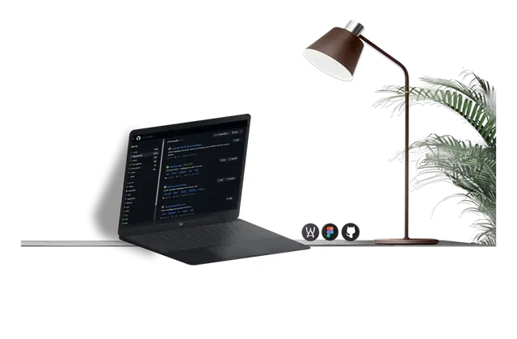
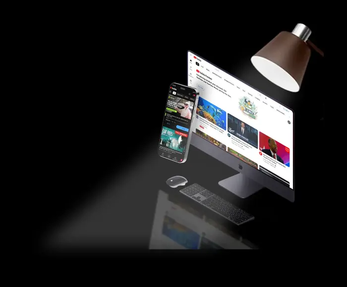
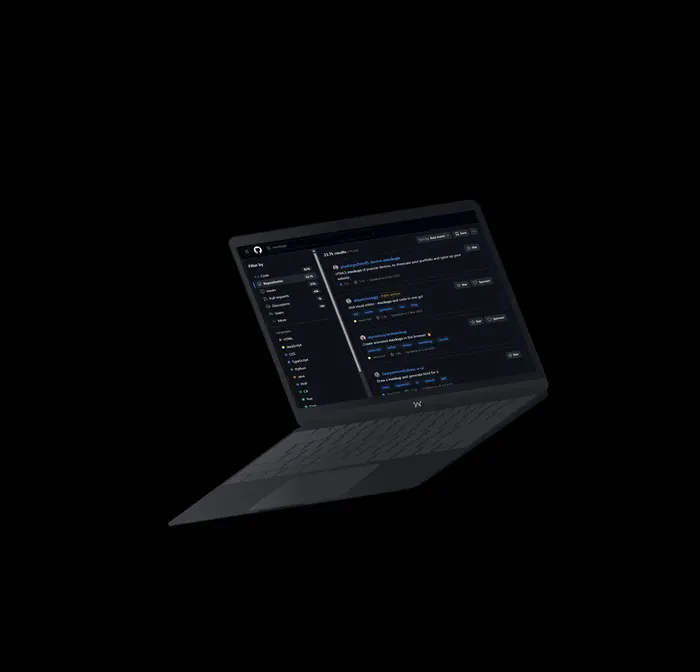
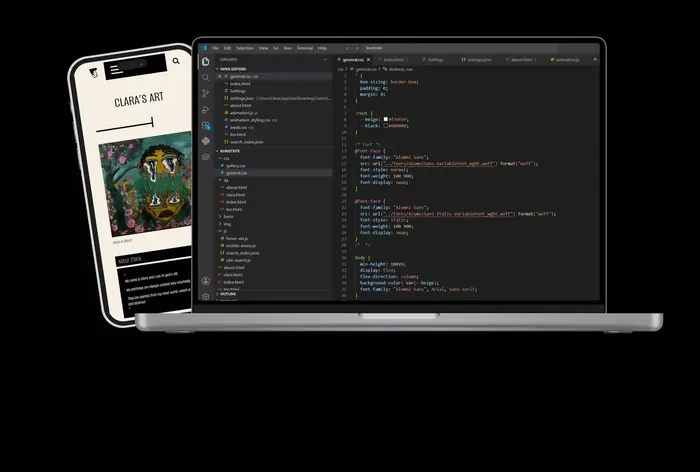
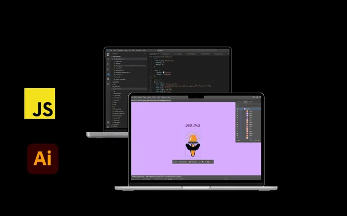
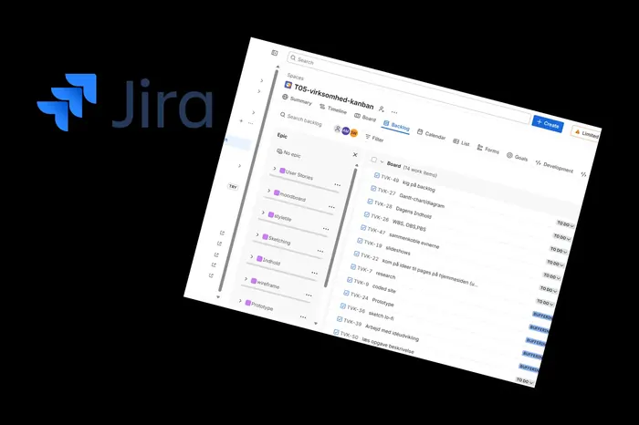
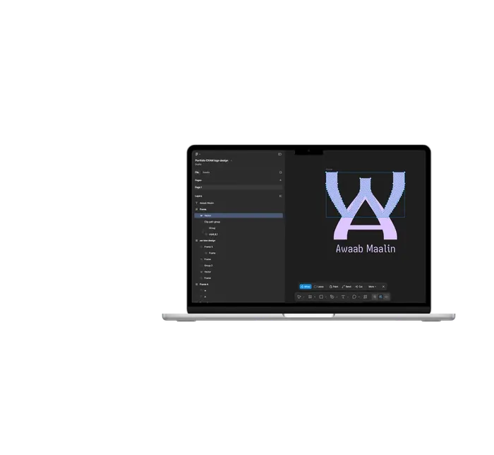

Portfolio
Om alle temaer på 1. semester
På denne side samler jeg mine vigtigste projekter fra 1. semester på Multimediedesign. Siden viser, hvordan jeg har arbejdet med web, UX/UI, JavaScript, indhold, visuel identitet og dokumentation fra de første øvelser til portfolioeksamen.

Tema 1: Video opgave og GitHub påbegyndelse
Intro
Fokus
Fokus var at komme i gang med multimediedesign som praksisfelt. Videoopgaven handlede om idéudvikling, planlægning, optagelse og præsentation af et kreativt produkt.
Læring
Jeg lærte, at multimediedesign både handler om idé, visuel kommunikation, samarbejde, proces og teknisk publicering. Tema 1 blev derfor en introduktion til både kreativ produktion og de første web-værktøjer.

Løsning
Tema 1 havde to vigtige dele: en intro-video og min første GitHub Pages-side. Videoopgaven var et gruppeprojekt fra intro-ugen, hvor vi lavede en Paradise Hotel-inspireret video. GitHub Pages-opgaven handlede om at komme i gang med at publicere en simpel webside online.
Link til første site: miawski.github.io/MMD
Proces
I videoopgaven arbejdede vi med idé, gruppeproces, optagelse og aflevering af et kreativt digitalt produkt. I GitHub-opgaven oprettede jeg mit første site og publicerede det på GitHub Pages.
Teorier og begreber
I Tema 1 arbejdede jeg især med idéudvikling, digital produktion, samarbejde og publicering. Temaet handlede om at forstå, hvordan en idé kan udvikles i en gruppe og omsættes til et digitalt produkt.
Brugertest, resultater og ændringer
Der var ikke fokus på en klassisk brugertest i Tema 1. Feedbacken kom primært gennem gruppeprocessen og afleveringen, hvor resultatet blev en færdig video og mit første publicerede GitHub Pages-site.
Refleksion over læring
Jeg kendte allerede lidt til kode, så jeg afleverede mit første GitHub Pages-site, før vi havde haft undervisning i det. Temaet blev derfor en tidlig introduktion til både kreativ produktion og webpublicering. Jeg lærte, at multimediedesign både handler om samarbejde, idéudvikling, visuel kommunikation og teknisk struktur.
Paradise EK Winter Edition
Videoopgaven fra Tema 1 viser min første kreative produktion på semesteret, hvor gruppen arbejdede med idéudvikling, samarbejde, optagelse og digital publicering.
Tema 2: Grundlæggende web
Computer website
Fokus
I Tema 2 arbejdede jeg med de første rigtige websites. Fokus var HTML, CSS, semantisk struktur, filstruktur, billeder, navigation og responsive design.
Læring
Temaet gav mig fundamentet for frontend-udvikling. Jeg fik bedre forståelse for, hvordan HTML-struktur og CSS-styling arbejder sammen.

Løsning
I Tema 2 arbejdede jeg med grundlæggende web og byggede et website om computere. Løsningen viser mit arbejde med HTML, CSS, filstruktur, navigation, semantisk opbygning og responsivt layout.
Link til temasite: generalwebsite
Link til GitHub repo: github.com/miawski/generalwebsite
Proces
Processen handlede om at opbygge et website fra bunden og forstå forholdet mellem HTML-struktur og CSS-styling. Jeg arbejdede med sider, navigation, layout, billeder, validering og responsivt design.
Teorier og begreber
I Tema 2 arbejdede jeg med semantisk HTML, responsive webdesign, CSS grid, wireframe, layoutdiagram og visuelt hierarki. Begreberne hjalp mig med at forstå, hvordan indhold og layout kan struktureres mere overskueligt.
Brugertest, resultater og ændringer
Jeg testede især sitet teknisk ved at kontrollere layout, responsivitet, links og filstruktur. Resultatet var et mere stabilt website, hvor ændringerne især handlede om at få struktur, grid og responsive visninger til at fungere.
Refleksion over læring
Tema 2 gav mig fundamentet for frontend-udvikling. Jeg lærte, hvordan et website bygges op med semantisk HTML og CSS, og hvordan CSS grid kan bruges til at skabe layout, kolonner og responsiv struktur. Jeg blev også mere opmærksom på, hvordan filstruktur, navngivning og responsive principper gør et projekt mere overskueligt og brugbart.
Computer-sitet viser mit arbejde med semantisk HTML, CSS, filstruktur, navigation, CSS grid og responsivt layout i Tema 2.
Tema 3: Grundlæggende UX/UI
Kunstsite
Fokus
I Tema 3 arbejdede jeg med et kunstsite med fokus på målgruppe, brugertyper, visuel identitet, moodboard, style tile, wireframes og prototype.
Læring
Jeg lærte, at UX/UI er en iterativ proces. Et design bliver stærkere, når man tester det, dokumenterer sine valg og justerer løsningen ud fra brugerens oplevelse.

Løsning
I Tema 3 udviklede jeg et kunstsite, hvor målet var at arbejde brugerorienteret med UX/UI, visuel identitet og digital prototype. Løsningen blev et kodet website, hvor designet bygger på research, moodboard, style tile, wireframes og brugertest.
Link til temasite: miawski.github.io/art_website_final_iteration
Link til GitHub repo: github.com/miawski/art_website_final_iteration
Proces
Processen startede med research, idéudvikling og visuel retning. Derefter arbejdede jeg videre med prototype, dokumentation og brugerorienterede valg. Jeg brugte feedback og test til at forbedre navigation, layout og den visuelle sammenhæng på sitet.
Desktop prototype: Desktop prototype dokumentation
Mobil prototype: Mobil prototype dokumentation
Dokumentation: Dokumentation for kunstsite
Teorier og begreber
I Tema 3 arbejdede jeg med målgruppe, brugertyper, research, moodboard, style tile, wireframe, prototype, Likert og tænkehøjt-test. De begreber hjalp mig med at gøre kunstsitet mere brugerorienteret og visuelt sammenhængende.
Brugertest, resultater og ændringer
Jeg brugte test og feedback til at vurdere, om brugeren forstod navigationen, den visuelle retning og sitets indhold. Resultatet var, at jeg kunne justere layout, navigation og præsentationen af kunsten, så sitet blev mere tydeligt.
Refleksion over læring
Jeg kunne godt lide, at Tema 3 gav mig mere kreativ frihed til selv at finde på løsninger og skabe et site med en mere personlig retning. Det var også første gang, jeg brugte JavaScript, så temaet blev både en designmæssig og teknisk læringsproces. Jeg brugte ikke AI i projektet, fordi en af mine venner, hvis kunst jeg brugte på sitet, var meget imod AI, og det valgte jeg at respektere. Jeg kunne godt lide at skabe en holistisk forbindelse og personlighed på sitet ved at kombinere mine egne styrker, mine venners kunst og mit eget kunstneriske udtryk.
Kunstsitet viser min proces med målgruppe, research, visuel identitet, UX/UI, prototype, brugertest og et mere personligt visuelt univers.
Tema 4: Brugergrænsefladeudvikling
Emergency site
Fokus
I Tema 4 arbejdede jeg med JavaScript, SVG, formularer, dark mode, interaktive elementer og brugerfeedback. Projektet handlede om at gøre en brugergrænseflade mere dynamisk og brugbar.
Læring
Jeg lærte, hvordan JavaScript kan skabe respons i brugerfladen, og hvorfor test er nødvendigt, når interaktioner skal fungere på både desktop og mobil.

Løsning
I Tema 4 udviklede jeg et emergency site med fokus på brugergrænsefladeudvikling. Løsningen arbejder med JavaScript, interaktive elementer, SVG, formularer, dark mode og brugerfeedback.
Link til temasite: miawski.github.io/emergency_BETA_220426
Link til GitHub repo: github.com/miawski/emergency_BETA_220426
Proces
Processen handlede om at gøre sitet mere dynamisk og brugbart med JavaScript. Jeg arbejdede med klikbare elementer, formularlogik, scroll-funktion, dark mode og visuel feedback. Undervejs var det vigtigt at teste ændringer, fordi nye funktioner let kan påvirke eksisterende funktioner.
Til forsiden brugte jeg også kode fra Antidote website som udgangspunkt. Jeg forkede deres kode og byggede videre på den, så jeg kunne forstå strukturen og tilpasse den til mit eget emergency site.
Dokumentation: Dokumentation for emergency site
Teorier og begreber
I Tema 4 arbejdede jeg med feedback, affordance, formularer, SVG, interaktivitet og usability. Det var især relevant, fordi sitet skulle reagere på brugerens handlinger og give tydelig visuel respons.
Brugertest, resultater og ændringer
Jeg testede de interaktive funktioner løbende, blandt andet formularer, dark mode, scroll og klikbare elementer. Resultatet var, at jeg blev mere opmærksom på, hvordan små fejl i JavaScript kan påvirke hele brugeroplevelsen.
Refleksion over læring
Jeg lærte, at JavaScript kan gøre en brugerflade mere interaktiv, men også at interaktioner kræver struktur og test. Temaet gjorde mig mere opmærksom på, hvordan kode, visuel feedback og brugeroplevelse hænger sammen. Jeg lærte også, hvorfor det er vigtigt at bevare eksisterende funktioner, når man bygger videre med nye funktioner.
Emergency-sitet viser mit arbejde med interaktivitet, JavaScript, brugerfeedback, formularer, dark mode og visuel kommunikation i Tema 4.
Tema 5: Grundlæggende indhold
Virksomhedssite
Fokus
I Tema 5 arbejdede jeg med redesign og indhold til et virksomhedssite. Projektet havde fokus på tekst, billeder, layout, visuel identitet og brugeroplevelse.
Læring
Jeg lærte, at godt webdesign også handler om indhold. Tekst, billeder, struktur og tone skal passe til både målgruppen og virksomhedens identitet.

Løsning
I Tema 5 arbejdede jeg med grundlæggende indhold gennem både et sandkassesite og et virksomhedssite. Virksomhedssitet blev lavet som et gruppeprojekt for Nørrebro Posthus, hvor vi arbejdede med redesign, indholdsproduktion, visuel identitet og en mere professionel digital præsentation.
Link til virksomhedssite: sakura-virksomhedssite.github.io/virksomhedssite
Link til GitHub repo: github.com/Sakura-Virksomhedssite/virksomhedssite
Link til sandkassesite: miawski.github.io/posthouse_sandbox
Proces
Processen bestod af idéudvikling, research, moodboard, style tile, indholdsproduktion, layoutarbejde og test. I sandkassesitet arbejdede jeg med koncept og visuelle elementer, mens virksomhedssitet handlede mere om redesign, kommunikation og at skabe en løsning, der kunne fungere for en rigtig virksomhed.
I slutningen af virksomhedssite-delen var jeg syg, så jeg kunne ikke være med til præsentationen. Jeg havde dog kodet hele gruppesitet selv, så min rolle i den tekniske del af projektet var central.
Dokumentation til virksomhedssite: Virksomhedssite proces
Download præsentation: Download Tema 5 præsentation
Teorier og begreber
I Tema 5 arbejdede jeg med design brief, brugerrejse, indholdsproduktion, visuel identitet, style tile, moodboard og præ-/postproduktion. Begreberne var vigtige, fordi projektet handlede om at skabe indhold og identitet til en rigtig virksomhed.
Brugertest, resultater og ændringer
Vi arbejdede med research, feedback og test af indhold, struktur og visuel retning. Resultatet var et virksomhedssite med tydeligere kommunikation, bedre præsentation af indhold og en mere samlet visuel identitet.
Refleksion over læring
Jeg lærte, at indhold er en central del af webdesign, og at et website bliver stærkere, når tekst, billeder, layout og visuel stil arbejder sammen. Jeg lærte også at arbejde i team, strukturere teamarbejde gennem et Kanban board og fordele opgaver, så projektet kunne komme videre. Temaet gjorde mig mere opmærksom på, hvordan man designer til en virkelig modtager og ikke kun ud fra egne idéer.
Virksomhedssitet fra Tema 5 viser arbejdet med indholdsproduktion, kommunikation, redesign, teamproces og en mere professionel digital præsentation.
Tema 6: Portfolioeksamen
Portfolio website
Fokus
I Tema 6 samler jeg min læring fra hele 1. semester i et portfolio website. Projektet skal vise både færdige løsninger, proces, refleksion og faglig udvikling.
Læring
Jeg lærer at samle et større projekt og holde struktur i både design, kode og dokumentation. Portfolioet viser, hvordan jeg tester, retter fejl og udvikler mine løsninger.

Løsning
I Tema 6 udvikler jeg dette portfolio website som min samlede præsentation af 1. semester. Løsningen viser mine projekter, links, proces, refleksioner og min faglige udvikling gennem temaerne.
Link til portfolio forside: Portfolio forside
Dokumentation: T06 EKSAMEN dokumentation
Proces
Processen har bestået af at samle materialer fra alle temaer, organisere links og dokumentation, designe en visuel retning, bygge layoutet i HTML og CSS og arbejde med responsive justeringer. Jeg brugte også feedback og brugertest til at undersøge, om navigationen, temaoversigten og portfolioets struktur var let at forstå. Portfolioet fungerer som en samlet oversigt over både løsning, proces og refleksion.
Teorier og begreber
I Tema 6 arbejdede jeg med informationsarkitektur, navigation, visuel sammenhæng, responsive principper, dokumentation og refleksion. Begreberne hjalp mig med at samle alle temaerne i en portfolio, hvor brugeren hurtigt kan finde løsning, proces og læring.
Brugertest, resultater og ændringer
Jeg brugte feedback og brugertest til at vurdere, om portfolioets navigation, temaoversigt og indhold var forståeligt. Resultatet var ændringer i struktur, CTA’er, temaindhold og dokumentation, så sitet blev mere overskueligt og eksamensrelevant.
Refleksion over læring
Jeg lærer at samle et større projekt og skabe sammenhæng mellem design, kode og dokumentation. Tema 6 viser også, hvor vigtigt det er at strukturere sit arbejde, så brugeren nemt kan finde færdige løsninger, procesmateriale og refleksioner.
Portfolio-forsiden samler min proces, mine temaer, min visuelle stil og mit arbejde med navigation, struktur og responsiv kodning.